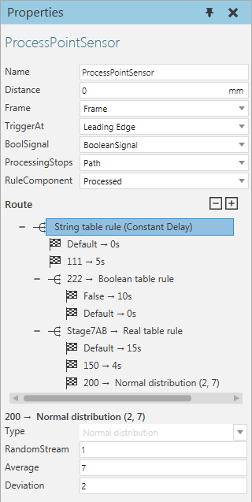
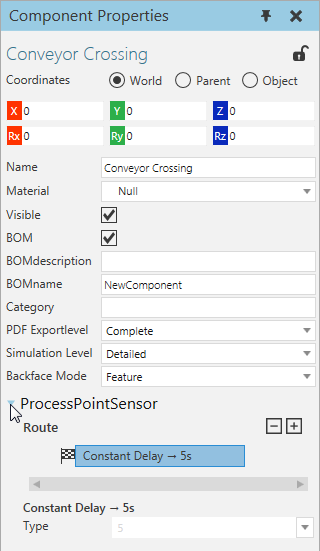

A Process Point Sensor allows you to detect components moving along a path and perform an action.

| Name | Description |
| Name | Defines the name of the sensor. |
| Distance | Defines the distance of sensor along a connected path. |
| Frame | Defines the Frame feature referenced as the physical location of the sensor. |
| TriggerAt | Defines the mode of the sensor for detecting components.
Leading Edge is triggered when the first edge of a component reaches the sensor. Origin is triggered when the origin of a component reaches the sensor. Trailing Edge is triggered when the last edge of a component reaches the sensor. None disables the sensor. |
| BoolSignal | Defines the Boolean Signal used to signal when a component triggers the sensor. |
| ProcessingStops | Defines the action to execute when the sensor detects a component.
Path stops the path the sensor is attached to in the 3D world. Component stops the component detected by the sensor. |
| RuleComponent | Defines if the sensor uses properties in a detected component or the component the sensor is attached to for calculating processing time. For example, a component may have its own processing time defined in one of its properties or a component may have a global property for controlling the processing time. |
A route defines the time delay (in seconds) for processing a detected component and can use one or more rules that form a nested structure. Some rules allow you to use other rules to determine the time delay for a component. In all cases, changing a rule will undo all of its child rules. As a last resort, some rules allow you to define a default time delay or rule.
Tip: You can edit the route of a Process Point Sensor in the Component Properties panel.

| Name | Description |
| Boolean Table | Time is based on a True or False value.
PropertyName defines which property of either processed component or owner component is evaluated by the rule. Default is used if the value of PropertyName does not match any listed value in table. |
| Integer Table | Time is based on an integer value.
PropertyName defines which property of either processed component or owner component is evaluated by the rule. Default is used if the value of PropertyName does not match any listed value in table. |
| Normal Distribution | Time is calculated using a normal distribution.
RandomStream can be used to seed a value. Average defines the average value. Deviation defines the standard deviation. |
| <Time> | Time is the given amount. |
| Uniform Distribution | Time is calculated using a uniform distribution.
RandomStream can be used to seed a value. Min defines the minimum amount of time. Max defines the maximum amount of time. |
| Real Table | Time is based on a real number value.
PropertyName defines which property of either processed component or owner component is evaluated by the rule. Default is used if the value of PropertyName does not match any listed value in table. |
| String Table | Time is based on a string value.
PropertyName defines which property of either processed component or owner component is evaluated by the rule. Default is used if the value of PropertyName does not match any listed value in table. |